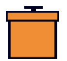
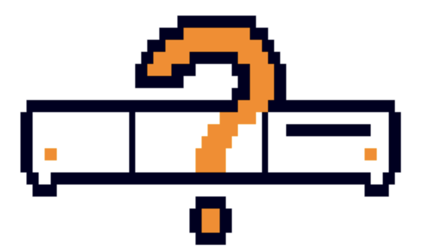
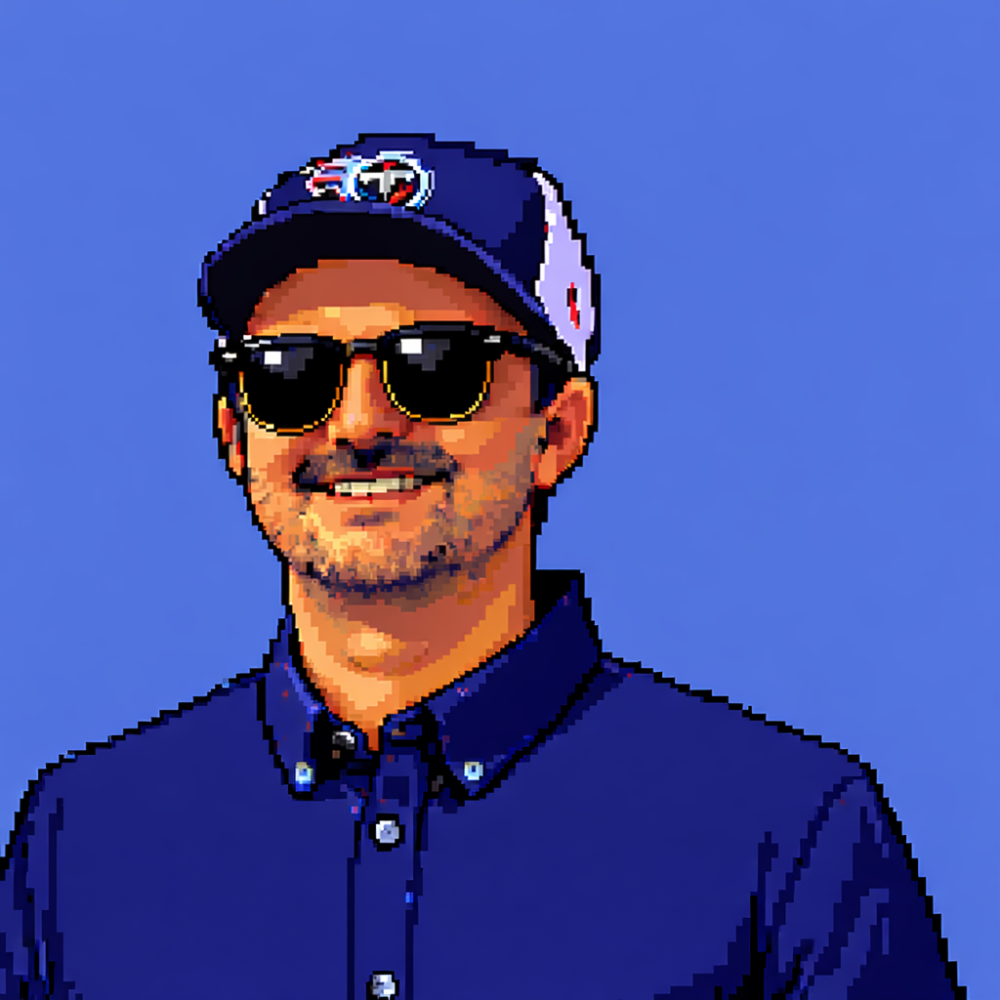
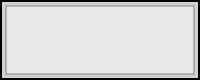
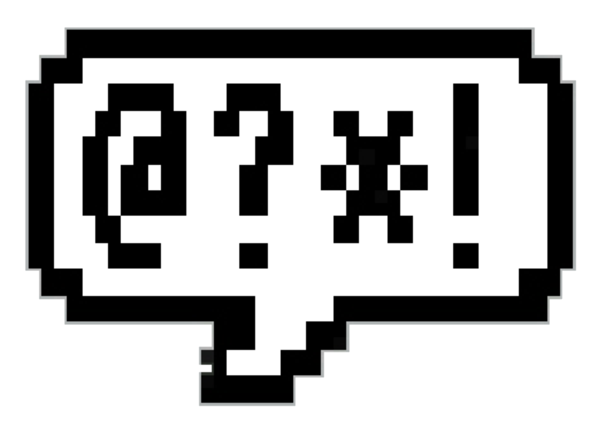
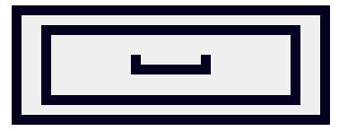

AI-assisted workflow
Strategy and UX for a B2B tool integrating generative AI into an existing professional workflow — research through MVP UI and handoff.

Trashcan
Preferences
Ingo Pfaff — freelance UX consultant with a strong focus on AI strategy.
I take products from first ideation through user research, design, and prototyping to working software — the full journey.
15+ years experience in complex, regulated environments like medical technology (8+ years), pharma, science & lab, semiconductors, and others like automotive.

A few of the organisations I work with most often. Logos and names appear only where usage is agreed.



Much of my recent work is under NDA. Below are anonymised snapshots you can swap for public case studies when available.
Strategy and UX for a B2B tool integrating generative AI into an existing professional workflow — research through MVP UI and handoff.
User research programme and component patterns for a complex data-heavy application; prototypes used in procurement and build.
From discovery workshops to live feature: interviews, flows, high-fidelity prototype, and frontend implementation in the team codebase.
For collaborations, AI / UX strategy, or a full-lane product engagement — get in touch.

Say
Secret